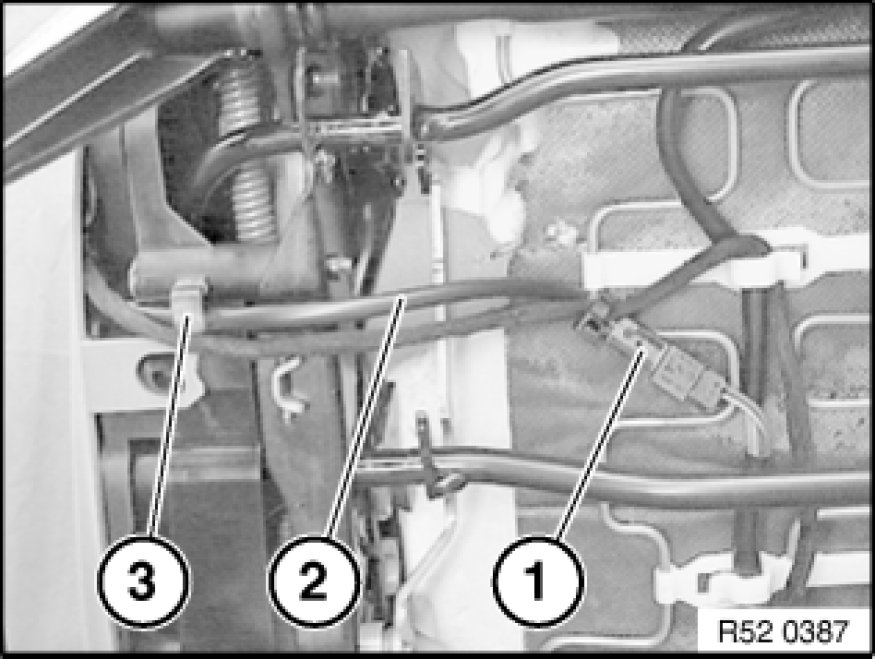
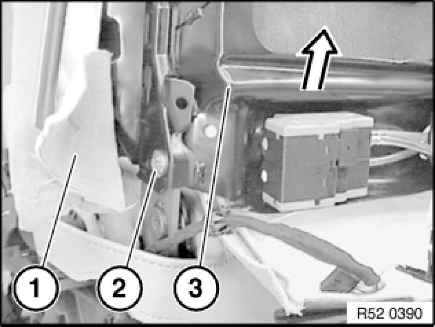

Replacing Back-Rest Cover For Left or Right Front Seat (Normal/Manual)
52 13 405 - Replacing back-rest cover for left or right front seat (normal / manual)
Remove rear panel on front seat backrest,
refer to 52 13 198. Removing and Installing/Replacing Rear Panel on Left or Right Front Seat Backrest (Normal/Manual).

Detach backrest cover (1) from backrest frame (2).

Version with seat heating only: expose seat heating cable:
Remove outer cover on front seat:
Manual operation, refer to 52 13 040. Removing and Installing/Replacing Outer Cover on Left or Right Front Seat Back-Rest (Normal/Manual)
Electrical operation, refer to 52 16 040. Removing and Installing/Replacing Outer Covers on Left or Right Front Seat (Sports/Electric)
Unfasten plug connection (1).
Pull cable (2) out of holder (3).

Model with seat heating only:
Pull out tongue (1).
Pull cable (2) out of holder (3).

Model with seat heating only:
Lift out Omega clip (1).
Pull out cable (2) from Omega clip (1).
Model with lumbar supports:
If necessary, disconnect plug connections (3) and (4).
Lift out Omega clip (1).

Removal/replacement of backrest frame only:
Detach cover (1) on left/right.
Caution!
Do not under any circumstances turn screw underneath screw (2), this would destroy the seat frame.
Loosen left/right screw (2).
Detach backrest frame (3) with backrest cover upwards.
Installation:
Replace screws (microencapsulated).
Tightening Torque,
refer to Technical Data 52 10 2AZ. [1][2]Seats

Note:
The operation "Removing complete backrest" ends here.
Removal of backrest cover with padding/replacement of backrest frame only:
Remove both guides for front head restraint,
refer to 52 13 ... Removing and Installing/Replacing Guide for Front Left or Right Head Restraint

Version with lumbar support only:
Note:
If necessary, gently heat air hose when firmly seated.
Valve housing must not be unclipped, leakage.
If the valve housing is unclipped, release screw and clip valve housing together.
Disconnect hoses (2) and (3) from valve housing (1).
2 - Hose (blue), top cushion
3 - Hose (red), bottom cushion
Note:
For purposes of clarity, shown here without valve housing.
Installation:
Observe cable guide (1) for backrest heating.
Lay air hoses (2) without kinks through hole (3).
Detach backrest cover (1) at sides towards front and remove with support upwards from backrest frame (2).
Note:
The operation "Removing backrest cover with support" ends here.
Removal of backrest cover from padding, replacing padding:
Release retainers (1) on left/right of backrest cover (2).
Note:
Support (3) is reinforced in this area.
Release all retainers.
Remove backrest cover (1) from padding.
Remove all remnants of retainers from backrest cover (1) and padding.
Installation:
Fold in new clip (2) with special tool 52 0 050.
1. Support
2. Retainer
3. Trim thread in support
4. Trim wire in backrest cover
5. Back-rest cover
Note:
The operation "Replacing support" ends here.
Replacement of backrest cover:
Pull trim threads (1) out of backrest cover.
Cut new backrest cover to size and insert trim threads (1).
2 - Seat heater cable